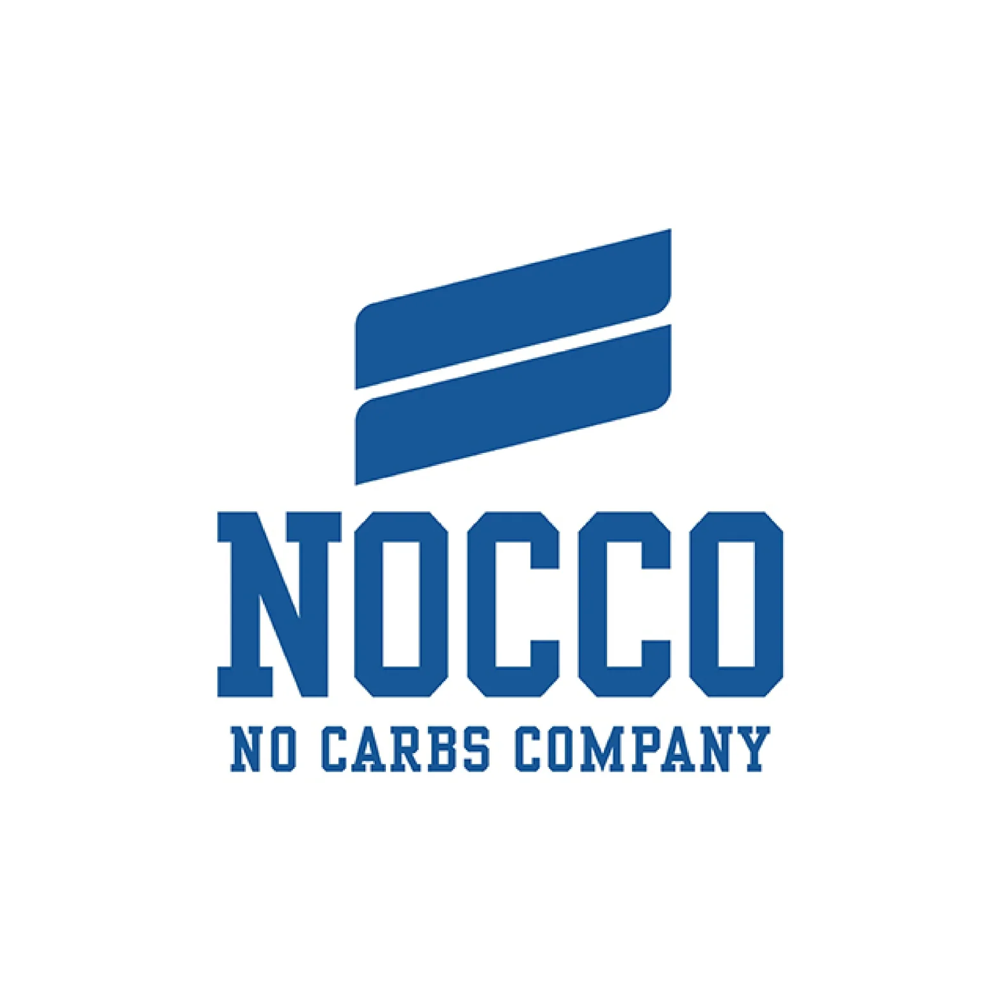
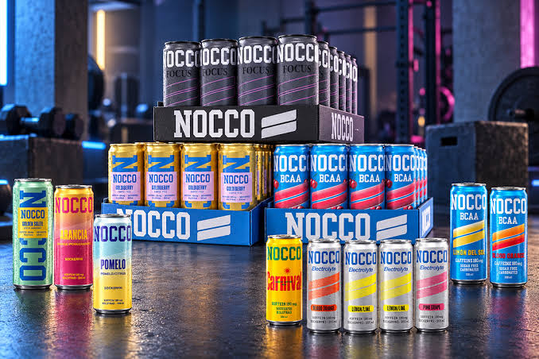

Nocco

Nocco (stiliserat NOCCO, en akronym för No Carbs Company) är en svensk energidryck
innehållande BCAA som marknadsförs av No Carbs Company och ägs av Vitamin Well AB. Drycken lanserades
2014 och var 2019 den dittills mest sålda BCAA-drycken i Sverige.[1] Den innehåller även sex olika typer
av vitaminer, som B6, B12 och folsyra.[2]

Nocco har fem typer av drycker i sitt sortiment,
Nocco BCAA, Nocco Focus, Nocco Electrolyte, Nocco PWO och Nocco BCAA+.
Nocco BCAA innehåller BCAA, koffein och grönt te. Nocco BCAA+ innehåller inget koffein men innehåller en högre halt BCAA.
Båda dryckerna är dock sockerfria och innehåller samma vitaminer.
[2] Nocco har även isglassar i sitt sortiment, som även de är sockerfria och som inte innehåller BCAA eller koffein.[3]
.jpeg)
”NOCCO 5 år- lanserar jubileumsburk”. Lightläsk.se. 3 december 2019. Läst 6 november 2023.
”FAQ”. www.nocco.com. Läst 6 november 2023.
Wagner Larsson, Thowe (12 juli 2017). ”NOCCO lanserar sockerfri isglass med ananassmak”. Elle. Läst 6 november 2023.